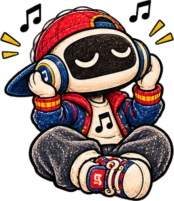

<!doctype html>
<html lang="pt-BR"><head><meta charset="utf-8"><meta name="viewport" content="width=device-width,initial-scale=1">
<title>Mock: as 12 fases em grade</title>
<link rel="stylesheet" href="../css/fonts.css">
<style>
*{box-sizing:border-box}body{margin:0;background:#e9e3d6;font:700 13px/1.25 "Hanken Grotesk",system-ui,sans-serif;color:#fff}
.board{display:flex;gap:18px;padding:18px;width:1030px;background:#e9e3d6}.col{display:flex;flex-direction:column;gap:6px}
.lab{font:800 12px/1 system-ui;letter-spacing:.08em;text-transform:uppercase;color:#6b5f4d}
.ph{width:316px;height:640px;border-radius:22px;overflow:hidden;background:#16304f;display:flex;flex-direction:column;position:relative}
.hd{display:flex;align-items:center;gap:6px;padding:10px 8px;background:#1d3a5e;border-bottom:3px solid #0d1b33}
.bk{border:2px solid #4a6a94;border-radius:6px;padding:6px 8px;font-size:12px}.rg{flex:1;line-height:1.1}.rg b{display:block;font-size:14px;color:#f2c14e}.rg small{opacity:.7;font-size:10px}
.pl{border:2px solid #4a6a94;border-radius:6px;padding:5px 6px;font-size:11px}.ico{width:34px;height:34px;border-radius:8px;display:grid;place-items:center;background:#f2c14e;color:#16304f;font-size:18px;box-shadow:0 0 0 3px #f2c14e55,0 0 14px #f2c14e;position:relative}
.ico small{position:absolute;bottom:-14px;font-size:8px;color:#f2c14e;white-space:nowrap}
.tt{text-align:center;padding:12px 8px 4px;font:400 20px Anton,Impact,sans-serif;letter-spacing:.04em;text-transform:uppercase;color:#f2c14e}.tt small{display:block;font:700 11px "Hanken Grotesk";color:#fff9;text-transform:none;letter-spacing:0}
.gold{color:#f2c14e}.dim{opacity:.45}
/* A: cartões */
.gA{display:grid;grid-template-columns:repeat(3,1fr);gap:9px;padding:10px 12px}
.cA{background:#1d3a5e;border:3px solid #4a6a94;border-radius:14px;padding:8px 6px;text-align:center;box-shadow:0 3px 0 #0d1b33;min-height:104px;display:flex;flex-direction:column;justify-content:space-between;align-items:center}
.cA .n{font:400 30px/1 Anton,Impact;color:#f2c14e}.cA .s{font-size:15px;letter-spacing:2px;color:#f2c14e}.cA .t{font-size:10px;opacity:.85;line-height:1.1}
.cA.cur{border-color:#f2c14e;box-shadow:0 0 0 3px #f2c14e55,0 0 18px #f2c14e88;background:#274a78}.cA.lk{opacity:.5;border-style:dashed}
/* B: discos */
.gB{display:grid;grid-template-columns:repeat(3,1fr);gap:6px 8px;padding:6px 12px}.rgB{grid-column:1/-1;font:800 11px "Hanken Grotesk";letter-spacing:.1em;text-transform:uppercase;color:#f2c14e;display:flex;gap:8px;align-items:center;margin-top:6px}.rgB:after{content:"";flex:1;border-top:2px dashed #4a6a94}
.cB{display:flex;flex-direction:column;align-items:center;gap:3px}.dB{width:78px;height:78px;border-radius:50%;background:repeating-radial-gradient(#0d1b33 0 3px,#1b2f4d 3px 6px);display:grid;place-items:center;border:3px solid #4a6a94;font:400 28px Anton;color:#f2c14e;position:relative}
.dB:before{content:"";position:absolute;inset:26px;border-radius:50%;background:#f2c14e;opacity:.15}.cB.cur .dB{border-color:#f2c14e;box-shadow:0 0 18px #f2c14e}.cB.lk .dB{opacity:.45}.cB .s{font-size:12px;letter-spacing:2px;color:#f2c14e;height:14px}.cB .t{font-size:10px;opacity:.8}
/* C: cobrinha */
.gC{position:relative;margin:10px 14px;height:480px}.nC{position:absolute;width:76px;text-align:center;transform:translate(-50%,-50%)}
.nC i{display:grid;place-items:center;width:58px;height:58px;margin:auto;border-radius:50%;background:#1d3a5e;border:4px solid #4a6a94;font:400 24px Anton;font-style:normal;color:#f2c14e}.nC.cur i{border-color:#f2c14e;box-shadow:0 0 16px #f2c14e;background:#274a78}.nC.lk i{opacity:.45}.nC .s{font-size:11px;color:#f2c14e;letter-spacing:1px;height:13px}.nC small{display:block;font-size:9px;opacity:.8;line-height:1.05}
.pa{position:absolute;width:64px;transform:translate(-30%,-95%)}
.bt{margin:auto 12px 12px;background:#f2c14e;color:#16304f;text-align:center;padding:12px;border-radius:12px;font-weight:800;font-size:15px;box-shadow:0 3px 0 #b88a1d}
</style></head><body><div id="o"></div>
<script type="module">
const T = ['Bumbo, caixa e chimbal', 'Pratos e toms', 'Peças e sons', 'Leitura rápida', 'Figuras e pausas', 'Pulso e tempo', 'Pratos abertos', 'Viradas simples', 'Groove em 8', 'Semicolcheias', 'Ritmo com pausa', 'Chefão da sala'];
const st = [3, 2, 3, 'c', 'l', 'l', 'l', 'l', 'l', 'l', 'l', 'l'];
const stars = (s) => (typeof s === 'number' ? '★'.repeat(s) + '☆'.repeat(3 - s) : s === 'c' ? '▶' : '🔒');
const cls = (s) => (s === 'c' ? 'cur' : s === 'l' ? 'lk' : '');
const hd = () => `<div class="hd"><span class="bk">‹ jogo</span><div class="rg"><b>Sala do Bumbo</b><small>peças e sons</small></div><span class="pl">◉ 3/12</span><span class="pl">★ 8/36</span><span class="ico">▦<small>12 fases</small></span></div>`;
const A = () => `${hd()}<div class="tt">as 12 fases<small>toque numa fase aberta pra ir direto</small></div><div class="gA">${st.map((s, i) => `<div class="cA ${cls(s)}"><div class="n">${i + 1}</div><div class="s">${stars(s)}</div><div class="t">${T[i]}</div></div>`).join('')}</div><div class="bt">▶ continuar na fase 4</div>`;
const B = () => `${hd()}<div class="tt">as 12 fases<small>toque no disco pra jogar</small></div><div class="gB">${[0, 1, 2, 3].map((r) => `<div class="rgB">região ${r + 1} · ${['Sala do Bumbo', 'Cabine', 'Palco', 'Camarim'][r]}</div>${[0, 1, 2].map((k) => { const i = r * 3 + k; const s = st[i]; return `<div class="cB ${cls(s)}"><div class="dB">${i + 1}</div><div class="s">${typeof s === 'number' ? '★'.repeat(s) : s === 'c' ? '▶' : '🔒'}</div><div class="t">${T[i]}</div></div>`; }).join('')}`).join('')}</div><div class="bt" style="margin-top:auto">▶ continuar na fase 4</div>`;
const C = () => { const pos = (i) => { const r = Math.floor(i / 3); const c = i % 3; const x = r % 2 === 0 ? 16 + c * 34 : 84 - c * 34 + 0; return [x, 8 + r * 28]; };
  const pts = st.map((_, i) => pos(i)); const path = pts.map(([x, y], i) => `${i ? 'L' : 'M'}${x * 2.88} ${y * 4.8}`).join(' ');
  return `${hd()}<div class="tt">o caminho em cobrinha<small>as 12 fases de uma vez, sem rolar o mapa</small></div><div class="gC"><svg viewBox="0 0 288 480" width="288" height="480" style="position:absolute;inset:0"><path d="${path}" fill="none" stroke="#4a6a94" stroke-width="5" stroke-dasharray="2 10" stroke-linecap="round"/><path d="${pts.slice(0, 4).map(([x, y], i) => `${i ? 'L' : 'M'}${x * 2.88} ${y * 4.8}`).join(' ')}" fill="none" stroke="#f2c14e" stroke-width="5" stroke-dasharray="2 10" stroke-linecap="round"/></svg>${st.map((s, i) => `<div class="nC ${cls(s)}" style="left:${pts[i][0]}%;top:${pts[i][1]}%"><i>${i + 1}</i><div class="s">${typeof s === 'number' ? '★'.repeat(s) : s === 'c' ? '▶' : '🔒'}</div><small>${T[i]}</small></div>`).join('')}</div><div class="bt" style="margin-top:auto">▶ continuar na fase 4</div>`; };
document.getElementById('o').innerHTML = `<div class="board" id="b">${[['A · cartões', A], ['B · discos por região', B], ['C · cobrinha com o Paul', C]].map(([l, f]) => `<div class="col"><div class="lab">${l}</div><div class="ph">${f()}</div></div>`).join('')}</div>`;
window.__ready = true;
</script></body></html>
